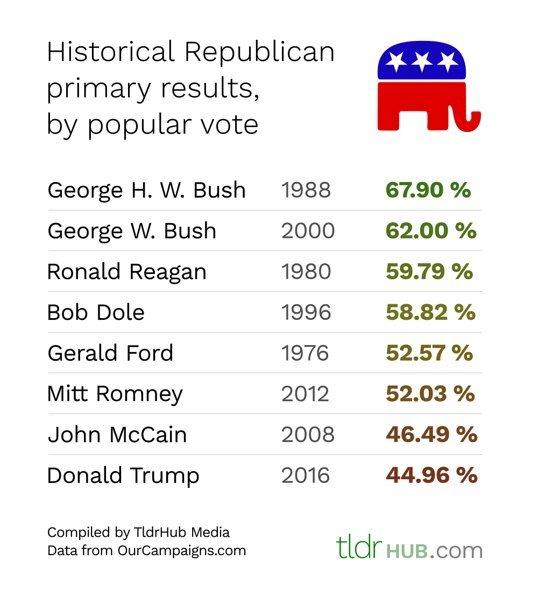
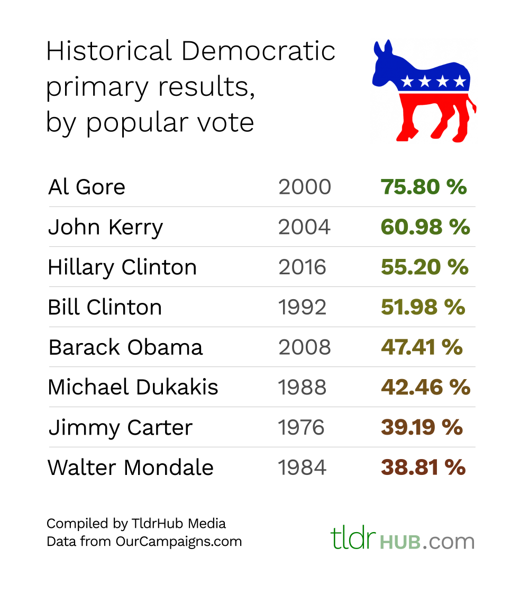
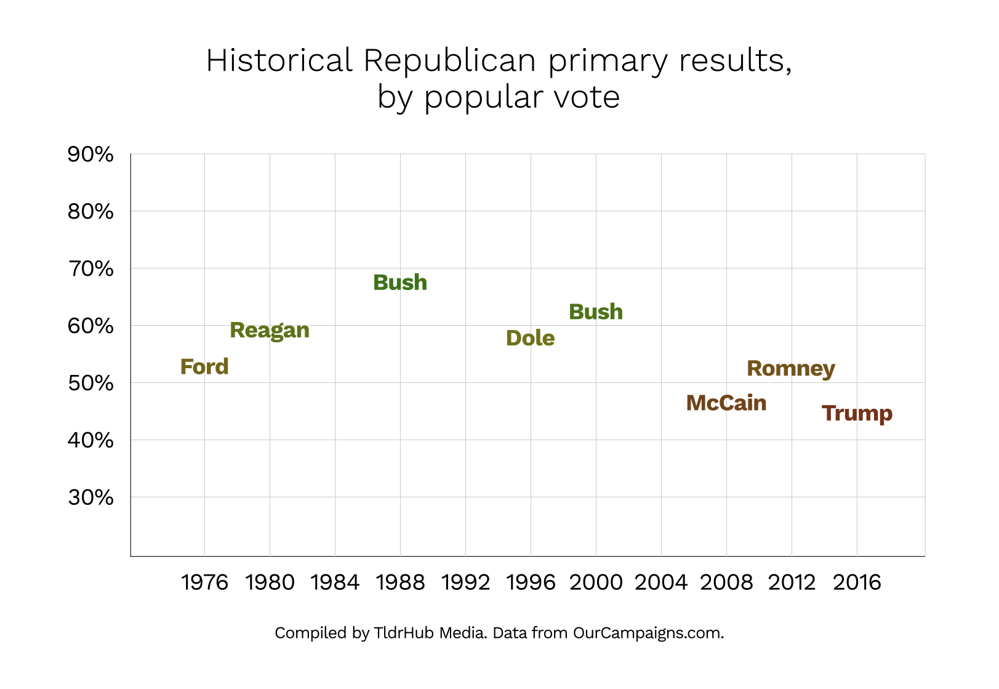
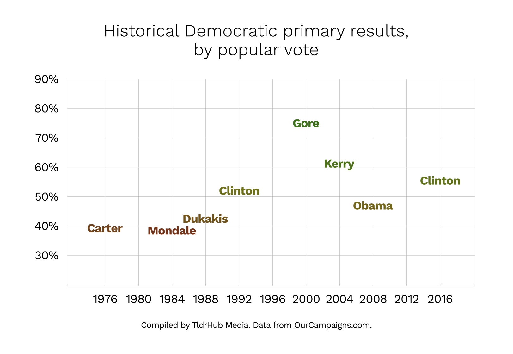

I’ve heard many people say lately that Trump received more votes in the Republican primaries than any GOP candidate in history. This is true — he received more than 13 million votes — but that’s only because more people voted in these primaries than ever before. In actuality, Trump received a smaller percentage of the votes than any Republican nominee in modern history, just 45%.
By “modern history,” I mean since 1976. Before then, party nominations were handled differently. Party elites had much more control over who the nominee was, and many states didn’t even have primaries or caucuses. Because of this, we’re not going to consider data from before 1976. Since then, however, no other GOP candidate has received as small of a portion of the electorate as Trump.
Hillary Clinton, on the other hand, received roughly 55% of the votes in the Democratic primaries, making her the third most popular Democratic nominee in modern history. This may seem counterintuitive, but it makes sense when you consider the playing field: no other well-known politicians ran. By last November, the only real competition Clinton had was Senator Bernie Sanders. Governor Martin O’Malley never really presented much of a problem to either of them and dropped out in early February. For most of the primary season, this was a two-way race, so naturally one of the candidates was going to do at least as well as Clinton did.
 Trends in the parties
Trump’s severe unpopularity in the Republican Party may just be a symptom of bigger problems within the party. The next least popular nominee was, surprisingly, Senator John McCain in 2008. He received 46.5% of the popular vote, which is only a point-and-a-half higher than Trump. Since 1988, GOP nominees have been gradually decreasing in popularity, as shown by the graph below. Note that we omitted years when incumbent presidents sought reelection, because they almost always received nearly full support from the party.
In 1988, George H. W. Bush received the highest percentage of votes out of all recent Republican primaries. The party was excited to continue Reagan’s legacy, and his vice president seemed to be the best man to do that. I’m not going to speculate as to what caused the gradual disunity after that. It might not even be much of a problem — we only have forty years of data with the current primary system, so this might just be the first dip in a natural cycle that spans several decades. In fact, when we look at the Democratic party nominations, we see a similar trend:
The Democrats peaked later than Republicans did, right around the same time Republican nominee popularity began to decrease. The Democrats now seem to be going back up with Clinton, but remember: Clinton’s popularity within her party may be artificially high because she was the only major figure running. Most major Democrat leaders probably knew Clinton would run, or they at least thought it was very likely, so no one dared to step into the race.
What it all means
Both parties are in a very awkward spot this year. Republicans have nominated their least popular nominee in history, a businessman with no political experience who angers nearly everyone every time he speaks. Democrats have nominated the complete opposite, a classic corrupt politician whose mistakes caused deaths and upset voters even inside her own party. All of this comes during a time when trends inside these two parties seem to indicate that one is in disarray and the other is, well, who knows.
So what does it all mean? This will be one of the most important elections in U.S. history. We’re at a critical time for both parties, a critical time for our nation’s government, and, most importantly, a critical time for our voters. The only two candidates who have a serious chance at the White House are probably more hated than anyone in their positions ever before, meaning Americans will be angry no matter what the result is. One could argue that the result of this election doesn’t even really matter, at least for now — either way, both parties are going to be upset internally and externally for the next four years — so just the fact that we’re in this situation means American politics will never be the same. Only time will tell.